Глава 4 Б-дерево
1 Определение и свойства АВЛ-дерева
2 Повороты при балансировке
3 Добавление вершины в дерево
4 Удаление вершины из дерева
1 Определение и свойства АВЛ-дерева
Как было показано выше, ИСДП обеспечивает минимальное среднее время поиска. Однако перестройка дерева после случайного включения вершины - довольно сложная операция. СДП дает среднее время поиска на 40 % больше, но процедура построения достаточно проста. Возможное промежуточное решение - введение менее строгого определения сбалансированности. Одно из таких определений было предложено Г. М. Адельсон - Вельским и Е. М. Ландисом (1962).
Дерево поиска называется сбалансированным по высоте, или АВЛ - деревом, если для каждой его вершины высоты левого и правого поддеревьев отличаются не более чем на 1.
На рисунке 13 - приведены примеры деревьев, одно из которых является АВЛ-деревом, а другое - нет. В выделенной вершине нарушается баланс высот левого и правого поддеревьев.
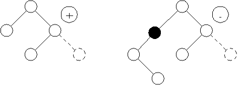
Рисунок 13 - Пример АВЛ-дерева и не АВЛ-дерева
Заметим, что ИСДП является также и АВЛ - деревом. Обратное утверждение не верно.
Адельсон - Вельский и Ландис доказали
теорему, гарантирующую, что АВЛ-дерево никогда не будет в среднем по
высоте превышать ИСДП более, чем на 45% независимо от количества
вершин:
log(n+1)
 hАВЛ(n)
< 1,44 log(n+2)
- 0,328 при n
hАВЛ(n)
< 1,44 log(n+2)
- 0,328 при n
 .
.
Таким образом, лучший случай сбалансированного по высоте дерева - ИСДП, худший случай - плохое АВЛ - дерево. Плохое АВЛ - дерево это АВЛ-дерево, которое имеет наименьшее число вершин при фиксированной высоте. Рассмотрим процесс построения плохого АВЛ-дерева. Возьмём фиксированную высоту h и построим АВЛ - дерево с минимальным количеством вершин. Обозначим такое дерево через Th. Ясно, что Т0 - пустое дерево, Т1 - дерево с одной вершиной. Для построения Тh при h > 1 будем брать корень и два поддерева с минимальным количеством вершин.
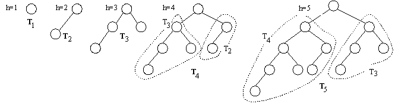
Рисунок 14 - Деревья Фибоначчи
Одно поддерево должно быть высотой h-1, а другое высотой h-2. Поскольку принцип их построения очень напоминает построение чисел Фибоначчи, то такие деревья называют деревьями Фибоначчи: Th = < Th-1, x, Th-2 >. Число вершин в Th определяется следующим образом:
n0 = 0, n1 = 1, nh = nh-1 + 1 + nh-2
2 Повороты при балансировке
Рассмотрим, что может произойти при включении новой вершины в сбалансированное по высоте дерево. Пусть r - корень АВЛ-дерева, у которого имеется левое поддерево (ТL) и правое поддерево (TR). Если добавление новой вершины в левое поддерево приведет к увеличению его высоты на 1, то возможны три случая:
если hL = hR, то ТL и TR станут разной высоты, но баланс не будет нарушен;
если hL < hR, то ТL и TR станут равной высоты, т. е. баланс даже улучшится;
если hL > hR, то баланс нарушиться и дерево необходимо перестраивать.
Введём в каждую вершину дополнительный параметр Balance (показатель баланса), принимающий следующие значения:
-1, если левое поддерево на единицу выше правого;
0, если высоты обоих поддеревьев одинаковы;
1, если правое поддерево на единицу выше левого.
Если в какой-либо вершине баланс высот нарушается, то необходимо так перестроить имеющееся дерево, чтобы восстановить баланс в каждой вершине. Для восстановления баланса будем использовать процедуры поворотов АВЛ-дерева.
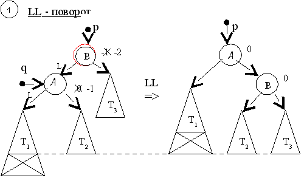
Рисунок 15 - LL - поворот
Алгоритм на псевдокоде
LL - поворот
q := pLeft
qBalance := 0
pBalance := 0
pLeft := qRight
qRight := p
p := q
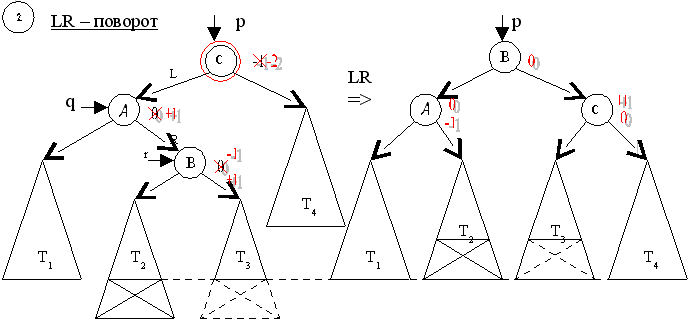
Рисунок 16 - LR – поворот
Алгоритм на псевдокоде
LR- поворот
q := pLeft,r := qRight
IF (rBalance<0) pBalance := +1 ELSE
pBalance := 0 FI
IF (rBalance>0)
qBalance := -1
ELSE qBalance := 0 FI
rBalance := 0
pLeft := rRight, qRight := rLeft
rLeft := q, rRight := p, p := r
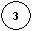
RR - поворот
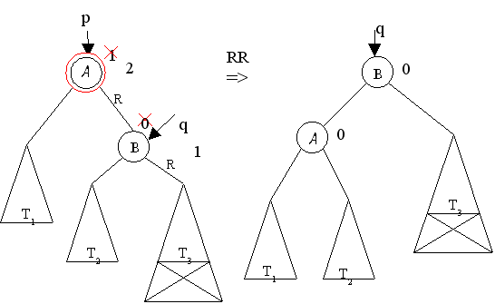
Рисунок 17 - RR – поворот
Алгоритм на псевдокоде
RR- поворот
q := pRight
qBalance := 0
pBalance := 0
p Right:= q Left
q Left := p
p
RL- поворот := q
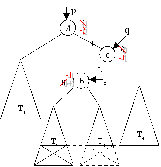
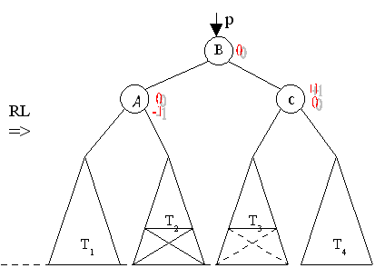
Рисунок 18 - RL – поворот
Алгоритм на псевдокоде
RL- поворот
q := pRight, r := qLeft
IF (rBalance>0) pBalance := -1
ELSE pBalance := 0
FI
IF (rBalance<0) qBalance := 1
ELSE qBalance := 0
FI
rBalance := 0
p Right:= r Left, q Left:= r
Right
r Left := p, rRight := q, p := r
3 Добавление вершины в дерево
Добавление новой вершины в АВЛ-дерево происходит следующим образом. Вначале добавим новую вершину в дерево так же как в случайное дерево поиска (проход по пути поиска до нужного места). Затем, двигаясь назад по пути поиска от новой вершины к корню дерева, будем искать вершину, в которой нарушился баланс (т. е. высоты левого и правого поддеревьев стали отличаться более чем на 1). Если такая вершина найдена, то изменим структуру дерева для восстановления баланса с помощью процедур поворотов.
Алгоритм на псевдокоде
Добавление в АВЛ - дерево (D: данные; Var p: pVertex);
Обозначим
Рост- логическая переменная, которая показывает выросло дерево илинет.
IF(p = NIL)
new(p), pData := D, pLeft := NIL, pRight
:= NIL
pBalance:= 0, Рост := ИСТИНА
ELSE
IF (pData > D)
Добавление в АВЛ - дерево (D, pLeft)
IF (Рост = ИСТИНА) {выросла левая ветвь}
IF(pBalance > 0) pBalance := 0, Рост:= ЛОЖЬ
ELSE IF (pBalance = 0) pBalance := -1
ELSE
IF(p ELSE Рост:= ЛОЖЬ
FI
FI
ELSE IF (p <аналогичные действия для правого поддерева
ELSE{p FI
FI
FI
Пример:
Построение АВЛ-дерева с вершинами B 9 2 4
1 7 E F A
D C 3 5 8 6
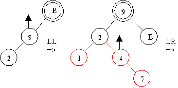 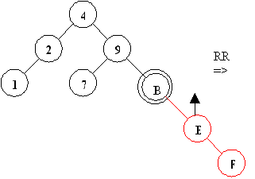 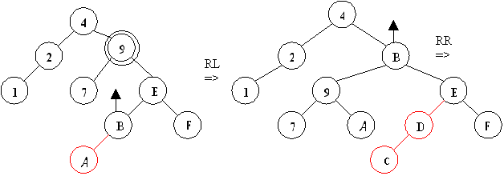
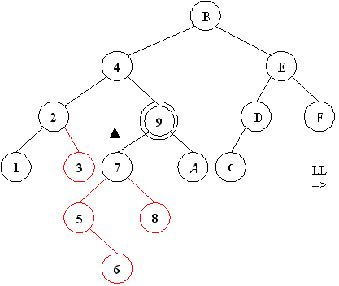 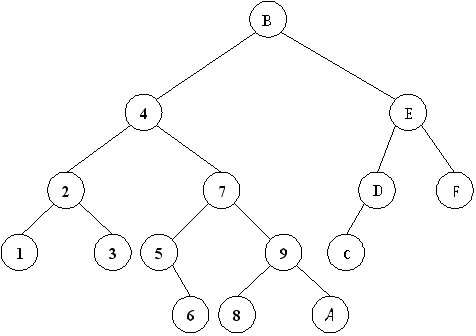
Удаление из АВЛ-дерева происходит следующим
образом. Удалим вершину так же, как это делалось для СДП. Затем
двигаясь назад от удалённой вершины к корню дерева, будем
восстанавливать баланс в каждой вершине (с помощью поворотов). При
этом нарушение баланса возможно в нескольких вершинах в отличие от
операции включения вершины в дерево.
Как и в случае добавления вершин, введём
логическую переменную Уменьшение, показывающую уменьшилась ли
высота поддерева. Балансировка идёт, только если Уменьшение =
истина. Это значение присваивается переменной Уменьшение, если
обнаружена и удалена вершина или высота поддерева уменьшилась в
процессе балансировки.
Введём две симметричные процедуры
балансировки, т. к. они будут использоваться несколько раз в
алгоритме удаления:
BL -
используется при уменьшении высоты левого поддерева,
BR -
используется при уменьшении высоты правого поддерева.
Рисунки
46 и 47 иллюстрируют три случая, возникающие при удалении вершины из
левого (для BL) или правого (для BR)
поддерева, в зависимости от исходного состояния баланса в вершине по
адресу p.
Алгоритм
на псевдокоде
BL
(p: pVertex,
Уменьшение: boolean)
IF (p ELSE
IF (p ELSE
IF (p IF(p ELSE
FI
FI
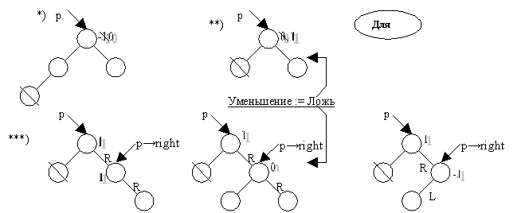 Рисунок 20 - Три случая при удалении вершины из левого (для BL) поддерева
BR(p: pVertex, Уменьшение: boolean)
IF (p ELSE
IF(p ELSE
IF (p IF(p ELSE
FI
FI
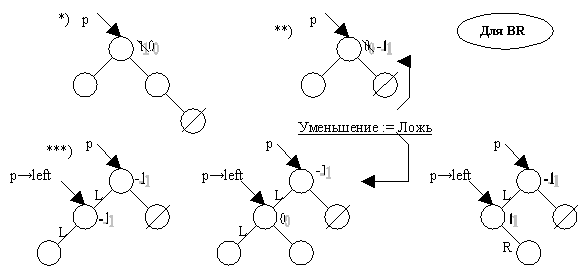 Рисунок 21 - Три случая при удалении вершины правого (для BR) поддерева
При добавлении вершины не может быть
случая, когда p Алгоритм на псевдокоде
LL1- поворот
q:= p IF(q ELSE p p q p := q
Аналогичноизменяется RR - поворот, LR и RL - повороты не изменяются.
Алгоритм на псевдокоде
RR1- поворот
q:= p IF(q p q Уменьшение := ЛОЖЬ
ELSE
p FI
p q p := q
Алгоритм на псевдокоде
Удаление из АВЛ-дерева (x: Данные, p:pVertex, Уменьшение: boolean)
IF(p = NIL) {ключа в дереве нет}
ELSE
IF (p IF Уменьшение BL (p,Уменьш)
FI
ELSE
IF (p IF Уменьшение BR (p,Уменьшение) FI
ELSE
IF {удаление вершины по адресу p}
q:= p
IF(q ELSE
IF (q ELSE
del (q IF Уменьшение BL (p,Уменьшение) FI
FI
dispose(q)
FI
FI
FI
Используемая
при удалении процедура del удаляет вершину,
имеющую 2 поддерева, т. е. заменяет её на самую правую вершину из
левого поддерева.
Алгоритм на псевдокоде
del (r: pVertex,Уменьшение: boolean)
IF(r del(r IFУменьшение BR (r,Уменьшение) FI
ELSE q q := r
r := r Уменьшение := ИСТИНА
FI
Пример:
Удаление из АВЛ-дерева вершин B 9 2 4 1
7 E F
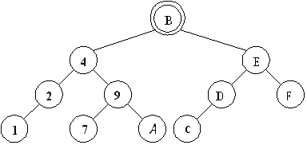
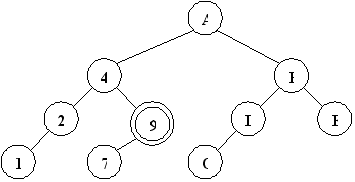
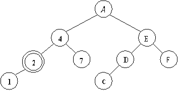 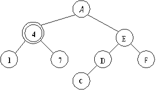
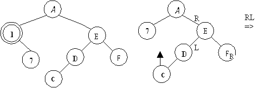
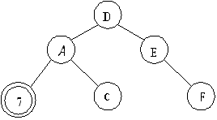 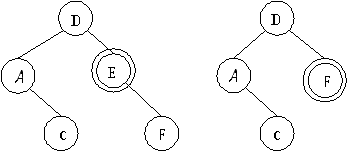
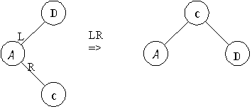
Поиск элемента с заданным ключом, включения
нового элемента, удаления элемента - каждое из этих действий в
АВЛ-дереве можно произвести в худшем случае за О(log
n) операций.
Отличие между процедурами включения и
удаления заключается в следующем. Включение может привести самое
большое к одному повороту, исключение может потребовать поворот во
всех вершинах вдоль пути поиска. Наихудшим случаем с точки зрения
количества балансировок является удаление самой правой вершины у
плохого АВЛ-дерева (дерева Фибоначчи). По экспериментальным оценкам
на каждые два включения встречается один поворот, а при исключении
поворот происходит в одном случае из пяти.
LeftBalance < 0) Data < D)
Data = D,
такая вершина уже есть}
Рисунок 19 - Построение АВЛ-дерева
4 Удаление вершины из дерева
Очевидно, удаление вершины - процесс
намного более сложный, чем добавление. Хотя алгоритм операции
балансировки остаётся тем же самым, что и при включении вершины.
Балансировка по-прежнему выполняется с помощью одного из четырёх уже
рассмотренных поворотов вершин.
Bal = -1) pBal := 0
Bal = 0) pBal := 1, Уменьшение:= ЛОЖЬ
Bal = 1)
RightBal  0)
0)
Алгоритм на псевдокоде
Bal = 1) pBal := 0
Bal = 0) pBal := -1, Уменьш:= ЛОЖЬ
Bal = -1)
LeftBal 0)
leftBal
= 0, поэтому LL - поворот необходимо
изменить, чтобы учесть эту ситуацию.
Left
Bal = 0) pBal := -1, qBal := 1, Уменьш:= false
Bal := 0, qBal := 0
Left := qRight
Right := p
Right
Bal = 0)
Bal := 1,
Bal := -1,
Bal := 0, qBal := 0
Right:= q Left
Left := p
Data> x) Удаление (x,pLeft,Уменьшение)
Data< x) Удаление (x,pRight,Уменьшение)
Right =NIL) p := qLeft,Уменьшение := ИСТИНА
Left= NIL) p :=qRight,Уменьшение := ИСТИНА
Left,Уменьшение)
right  NIL)
right,Уменьшение)
Data := rData
Left
NIL)
right,Уменьшение)
Data := rData
Left
Рисунок 22 - Удаление из АВЛ-дерева
Контрольные вопросы